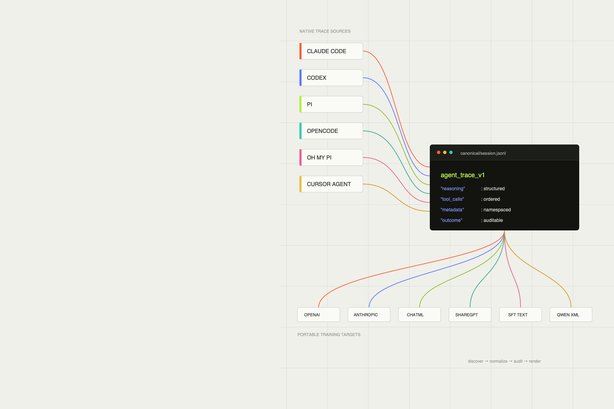

Public preview v0.1.0
Agent Trace Hub
Your coding agents already produced the training data. Keep its structure.
Discover Claude Code, Codex, Pi, OpenCode, OMP, and Cursor Agent sessions. Normalize once. Audit locally. Render for any model next.
curl -fsSL https://raw.githubusercontent.com/selimozten/agent-trace-hub/main/install.sh | sh
Reads where your agents already write
- 01Claude Code
- 02Codex
- 03Pi
- 04OpenCode
- 05OMP
- 06Cursor Agent
Trace Lab
Change the source. Change the target. Keep the trace.
Source-specific detail enters one durable contract. Training-specific syntax appears only at the final render step.
- 14
- import adapters
- 6
- native v1 sources
- 6
- training renderers
{
"schema": "agent_trace_v1",
"source": { "agent": "codex" },
"messages": [{
"role": "assistant",
"reasoning": ["Inspect the failing test first."],
"tool_calls": [{ "name": "exec_command" }]
}],
"outcome": { "quality": "unlabeled" }
}The contract
Structured events in. Structured events out.
Canonicalization is not transcript flattening. The fields that make an agent trace useful remain explicit and queryable.
Local by default
Your traces do not need another cloud.
Discovery, normalization, schema validation, deterministic auditing, rendering, and dataset packaging run on your machine. No telemetry.
Security policy$ ath audit \
--input canonical/shard.jsonl \
--profile public
schema agent_trace_v1
findings 0
blocking 0
status passStandalone executable
One binary. Runtime, SQLite, and schemas included.
No Node.js, Bun, or node_modules after installation.
Every archive is published with a SHA-256 checksum.
curl -fsSL https://raw.githubusercontent.com/selimozten/agent-trace-hub/main/install.sh | sh